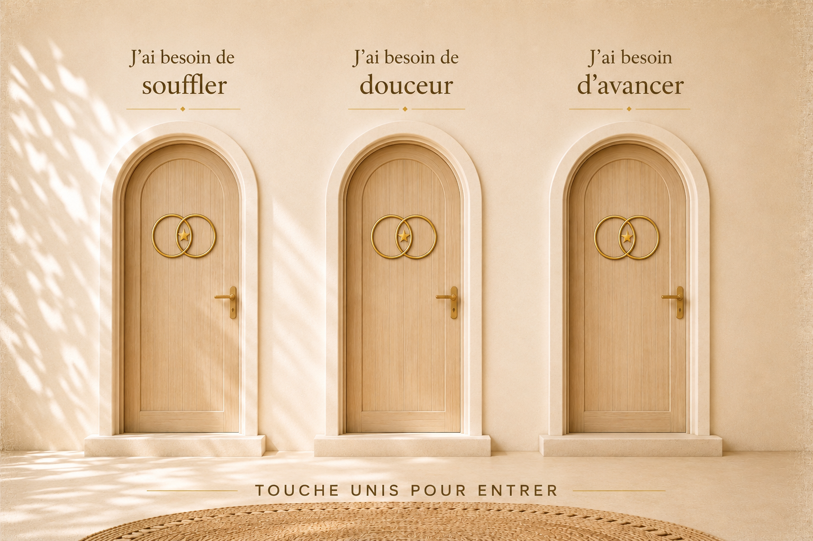

```html
<!DOCTYPE html>
<html lang="fr">
<head>
<meta charset="UTF-8">
<meta name="viewport" content="width=device-width,initial-scale=1,maximum-scale=1,viewport-fit=cover">
<title>UNIS</title>
<style>
*{box-sizing:border-box}html,body{margin:0;width:100%;height:100%;overflow:hidden;background:#efe3cf}button{font:inherit}
#viewport{position:fixed;inset:0;display:flex;align-items:center;justify-content:center;overflow:hidden;background:#efe3cf}
#scene{position:relative;width:min(100vw,150vh);aspect-ratio:3/2;flex-shrink:0;transform-origin:50% 50%;will-change:transform,filter}
#portesImage{position:absolute;inset:0;width:100%;height:100%;object-fit:contain;display:block;pointer-events:none;user-select:none}
.porte{position:absolute;top:27%;width:17.5%;height:55%;border:0;padding:0;background:transparent;cursor:pointer;perspective:1800px;-webkit-tap-highlight-color:transparent}
.porte1{left:15%}.porte2{left:41.25%}.porte3{left:67.5%}
.portail{position:absolute;left:4%;right:4%;top:0;bottom:1%;z-index:1;opacity:0;overflow:hidden;background:radial-gradient(ellipse at 50% 48%,#fff 0%,#fff 40%,#fffbe9 65%,#fff4c9 82%,#fff 100%);box-shadow:0 0 30px #fff,0 0 80px #fff,0 0 150px rgba(255,241,190,.9);clip-path:path("M 0.5 1 C 0.5 1 0.5 0.28 0.5 0.23 C 0.5 0.08 0.36 0 0.18 0 C 0.08 0 0 0.09 0 0.22 L 0 1 Z");transition:opacity .5s ease}
.porte.ouverte .portail{opacity:1}
.arche{position:absolute;left:4%;right:4%;top:0;bottom:1%;z-index:2;overflow:hidden;border-radius:48% 48% 2% 2%/21% 21% 2% 2%;pointer-events:none}
.battant{position:absolute;inset:0;z-index:3;transform-origin:left center;transform-style:preserve-3d;backface-visibility:hidden;transition:transform 1.35s cubic-bezier(.2,.7,.12,1),filter 1s ease}
.battant canvas{width:100%;height:100%;display:block;border-radius:48% 48% 2% 2%/21% 21% 2% 2%}
.porte.ouverte .battant{transform:perspective(1800px) rotateY(79deg) scaleX(.97);filter:brightness(.88)}
#etoiles{position:fixed;inset:0;z-index:18;pointer-events:none;opacity:0;transition:opacity .5s ease}
#etoiles.actif{opacity:1}
.star{position:absolute;color:#d6a84d;font-size:clamp(10px,1.5vw,24px);opacity:0;text-shadow:0 0 8px rgba(255,232,172,.9);animation:etoile 2s ease-out infinite}
.s1{top:7%;left:12%;animation-delay:0s}.s2{top:3%;left:42%;animation-delay:.08s}.s3{top:8%;right:10%;animation-delay:.16s}.s4{top:28%;left:5%;animation-delay:.24s}.s5{top:31%;right:4%;animation-delay:.32s}.s6{bottom:21%;left:8%;animation-delay:.4s}.s7{bottom:18%;right:8%;animation-delay:.48s}.s8{bottom:5%;left:29%;animation-delay:.56s}.s9{bottom:7%;right:29%;animation-delay:.64s}.s10{top:48%;left:17%;animation-delay:.72s}.s11{top:50%;right:17%;animation-delay:.8s}.s12{bottom:10%;left:50%;animation-delay:.88s}
@keyframes etoile{0%{opacity:0;transform:scale(.3) rotate(0deg)}25%{opacity:1;transform:scale(1.1) rotate(35deg)}60%{opacity:.7;transform:scale(.8) rotate(80deg)}100%{opacity:0;transform:scale(.2) rotate(130deg)}}
#scene.entree{animation:avancer 2.8s cubic-bezier(.28,.02,.08,1) forwards}
@keyframes avancer{0%{transform:scale(1);filter:blur(0)}100%{transform:scale(5.2);filter:blur(2px)}}
#flash{position:fixed;inset:0;z-index:30;background:#fff;opacity:0;pointer-events:none}
#flash.actif{animation:flashBlanc 1.25s ease forwards}
@keyframes flashBlanc{0%{opacity:0}35%{opacity:.1}65%{opacity:.52}85%{opacity:.93}100%{opacity:1}}
#destination{position:fixed;inset:0;z-index:40;background:#fff;display:flex;align-items:center;justify-content:center;opacity:0;pointer-events:none;transition:opacity .8s ease}
#destination.visible{opacity:1;pointer-events:auto}
#imageDestination{width:100%;height:100%;object-fit:contain;display:block}
#retour{position:absolute;left:50%;bottom:max(18px,env(safe-area-inset-bottom));transform:translateX(-50%);padding:11px 20px;border:1px solid rgba(142,105,55,.45);border-radius:30px;background:rgba(255,255,255,.8);backdrop-filter:blur(8px);color:#6d4d2c;font:11px Arial,sans-serif;letter-spacing:.13em;text-transform:uppercase;cursor:pointer}
@media(orientation:portrait){#scene{width:100vw;height:auto}}
@media(orientation:landscape){#scene{height:100vh;width:auto}}
</style>
</head>
<body>
<div id="viewport">
<div id="scene">

<button class="porte porte1" data-x="23.75" data-y="54" data-image="souffler.png" aria-label="J’ai besoin de souffler"><div class="portail"></div><div class="battant"><canvas></canvas></div></button>
<button class="porte porte2" data-x="50" data-y="54" data-image="douceur.png" aria-label="J’ai besoin de douceur"><div class="portail"></div><div class="battant"><canvas></canvas></div></button>
<button class="porte porte3" data-x="76.25" data-y="54" data-image="avancer.png" aria-label="J’ai besoin d’avancer"><div class="portail"></div><div class="battant"><canvas></canvas></div></button>
</div>
</div>
<div id="etoiles">
<span class="star s1">✦</span><span class="star s2">✧</span><span class="star s3">✦</span><span class="star s4">✧</span><span class="star s5">✦</span><span class="star s6">✧</span><span class="star s7">✦</span><span class="star s8">✧</span><span class="star s9">✦</span><span class="star s10">✧</span><span class="star s11">✦</span><span class="star s12">✧</span>
</div>
<div id="flash"></div>
<div id="destination"><button id="retour">Revenir aux portes</button></div>
<audio id="carillon" preload="auto" playsinline><source src="carillon.m4a" type="audio/mp4"></audio>
<script>
const scene=document.getElementById("scene"),imagePrincipale=document.getElementById("portesImage"),portes=document.querySelectorAll(".porte"),flash=document.getElementById("flash"),etoiles=document.getElementById("etoiles"),destination=document.getElementById("destination"),imageDestination=document.getElementById("imageDestination"),retour=document.getElementById("retour"),carillon=document.getElementById("carillon");let animationEnCours=false;
function creerBattants(){const W=imagePrincipale.naturalWidth,H=imagePrincipale.naturalHeight;if(!W||!H)return;portes.forEach(porte=>{const canvas=porte.querySelector("canvas"),ctx=canvas.getContext("2d"),gauche=porte.classList.contains("porte1")?15:porte.classList.contains("porte2")?41.25:67.5,haut=27,largeur=17.5,hauteur=55,sx=W*gauche/100,sy=H*haut/100,sw=W*largeur/100,sh=H*hauteur/100;canvas.width=Math.round(sw);canvas.height=Math.round(sh);ctx.clearRect(0,0,canvas.width,canvas.height);ctx.drawImage(imagePrincipale,sx,sy,sw,sh,0,0,canvas.width,canvas.height)})}
if(imagePrincipale.complete)creerBattants();else imagePrincipale.addEventListener("load",creerBattants);
function ouvrirPorte(porte){if(animationEnCours)return;animationEnCours=true;imageDestination.src=porte.dataset.image;scene.style.transformOrigin=porte.dataset.x+"% "+porte.dataset.y+"%";try{carillon.currentTime=0;const p=carillon.play();if(p)p.catch(()=>{})}catch(e){}porte.classList.add("ouverte");setTimeout(()=>etoiles.classList.add("actif"),450);setTimeout(()=>scene.classList.add("entree"),650);setTimeout(()=>flash.classList.add("actif"),2050);setTimeout(()=>destination.classList.add("visible"),3050)}
portes.forEach(porte=>porte.addEventListener("click",()=>ouvrirPorte(porte)));
retour.addEventListener("click",()=>{destination.classList.remove("visible");flash.classList.remove("actif");etoiles.classList.remove("actif");scene.classList.remove("entree");portes.forEach(porte=>porte.classList.remove("ouverte"));scene.style.transformOrigin="50% 50%";try{carillon.pause();carillon.currentTime=0}catch(e){}setTimeout(()=>{imageDestination.src="";animationEnCours=false},850)});
</script>
</body>
</html>
```
